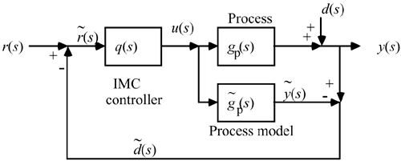
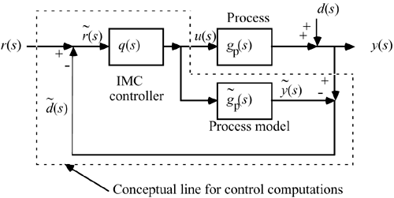
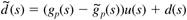
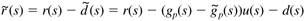
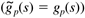
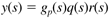
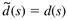
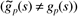
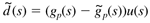
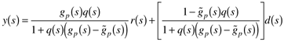

| [ Team LiB ] |
|
8.7 The IMC StructureThe IMC structure is shown in Figure 8-12. The distinguishing characteristic of this structure is the process model, which is in parallel with the actual process (plant). Note that (~) is generally used to represent signals associated with the model. Other literature sources may use a subscript (such as m) to represent the model. Figure 8-13 illustrates that both the controller and model exist as computer computations; it is convenient to treat them separately for design and analysis. Figure 8-12. The internal model control structure. Figure 8-13. The IMC strategy. The dotted line indicates the calculations performed by the model-based controller. A list of transfer function variables shown in the IMC block diagram are given below.
Notice that the feedback signal is  The signal to the controller is  Consider now some limiting cases. Perfect Model, No DisturbancesIf the model is perfect  and there are no disturbances (d(s) = 0), then the feedback signal is zero. The relationship between r(s) and y(s) is then  Notice that this is the same relationship that we get for an open-loop control system design. Why is this nice? If the controller, q(s), is stable and the process, gp(s), is stable, then the closed-loop system is stable. We developed a design procedure that yields a stable, physically realizable controller in Section 8.3. Recall that a standard feedback controller could actually destabilize a process if we did not correctly choose the tuning parameters. An analysis of the poles of the closed-loop transfer function must be performed to determine the stability of standard feedback controllers. Perfect Model, Disturbance EffectIf the model is perfect and there is a disturbance, then the feedback signal is  This illustrates that feedback is needed because of unmeasured disturbances entering a process. Model Uncertainty, No DisturbancesIf there are no disturbances [d(s) = 0] but there is model uncertainty , which is always the case in the real world, then the feedback signal is  This illustrates that feedback is needed because of model uncertainty. The closed-loop relationship is  Recapitulating, the reasons for feedback control include the following:
The primary disadvantage of IMC is that it does not guarantee stability of open-loop unstable systems. The procedure detailed in Chapter 9 handles these systems. |
| [ Team LiB ] |
|